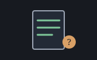

A reckoner seed: text files over the guarded builtins — machines/seeds/seedfile.shoddy

seedfile bridges text files: READLINES WRITELINES
APPENDLINE FILEEXISTS. A bridged word must not be able to abort the
session, and file.shoddy's own ReadLines,
WriteLines and AppendLine are built on the
aborting ReadFile, WriteFile and
AppendFile — so this seed does not call them.
It reimplements their line-splitting and line-joining over
TryReadFile and TryWriteFile instead, the guarded
pair the runtime addition in this enhancement exists to provide.
APPENDLINE has no guarded builtin twin.
There is a TryWriteFile but no TryAppendFile, so
APPENDLINE reads what is there (nothing, if the path does not
yet exist or cannot be read) and writes it back with the new line on the
end — an honest emulation, not the real append, and the one place this
seed's behaviour is not simply the builtin's.
Every word here touches the world: reading a path answers something
different from one run to the next exactly as writing one does, so all
four are flagged effectful — including FILEEXISTS, which is
informational, not a guard. It is bridged for convenience;
it is never the pre-flight that satisfies R3.5(a), because a directory
reports False and an unwritable existing file reports True. Every other
word here answers on its own rather than leaning on it.
Let st0 = RckSeedFile(RckNew())
RckEval(st0, Chr(34) & "dat/sales.csv" & Chr(34) & " READLINES")
RckEval(st0, Chr(34) & "no/such/path.txt" & Chr(34) & " READLINES")
' x: a refusal naming why — the state, and the session, survive| Word | Description |
|---|---|
| READLINES ( path -- list ) | The file's lines, or a refusal naming why it could not be read. |
| WRITELINES ( path list -- ok ) | Write the list's strings to path, one per line; True on success. |
| APPENDLINE ( path s -- ok ) | Add s as a new last line of path (created if it does not exist); True on success. |
| FILEEXISTS ( path -- flag ) | Whether path names an existing file — informational only, not a guard: a directory answers False and an unwritable file answers True. |
| User | How | |
|---|---|---|
| halifax | The calculator's line-oriented file words: READLINES, WRITELINES, APPENDLINE and FILEEXISTS. | |
| sparky | Sparky folds it too, so a model calling eval reaches the same words halifax puts at a prompt. |
A mill claims this seed by folding RckSeedFile over its
reckoner state, which is all halifax does.
| Machine | Why | |
|---|---|---|
| cuttle | The Cell type every word here reads and answers. | |
| reckoner | RckReg, RckSeeding and the argument readers every registered word is built from. | |
| seq | List plumbing under the LIST-of-STRING reader WRITELINES shares. | |
| str | Split, Join and EndsWith do the line-splitting and line-joining file.shoddy's aborting words would otherwise have done. |